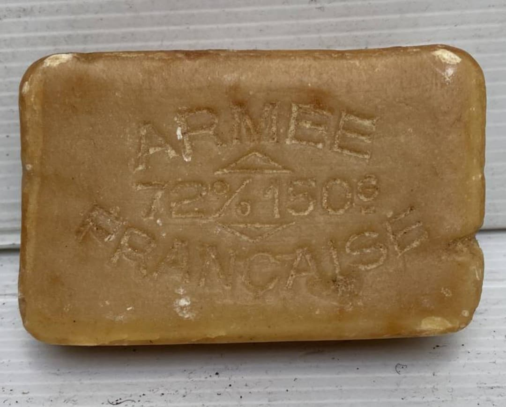
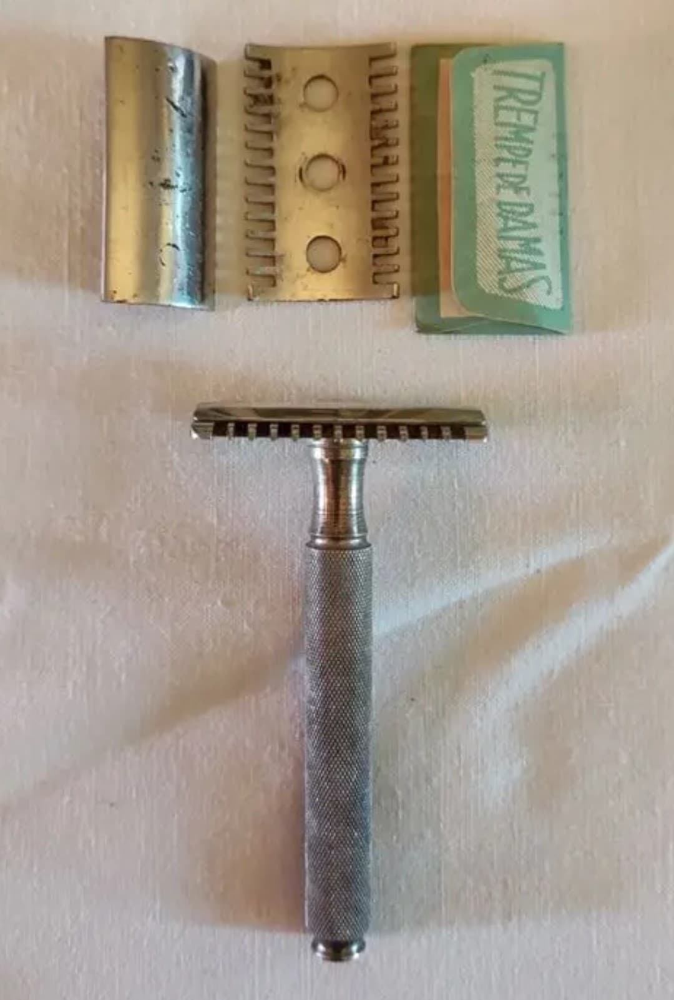
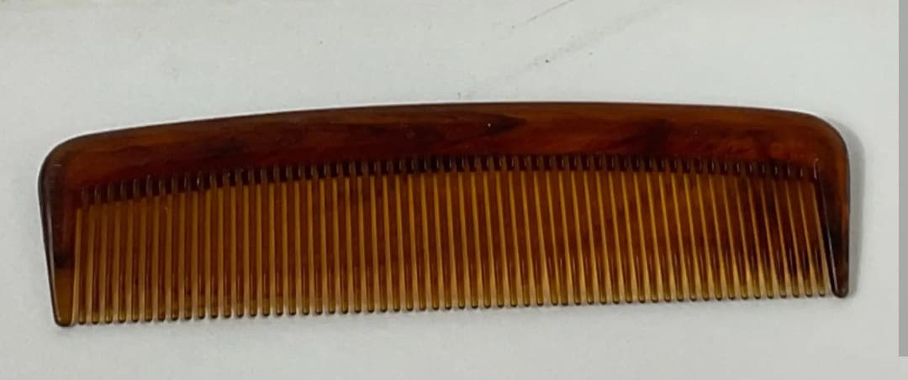
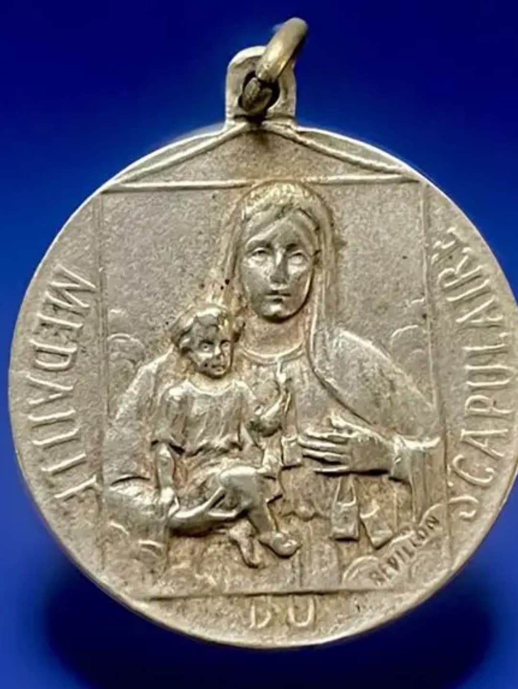
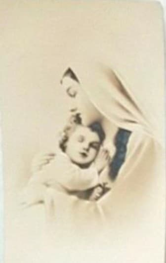
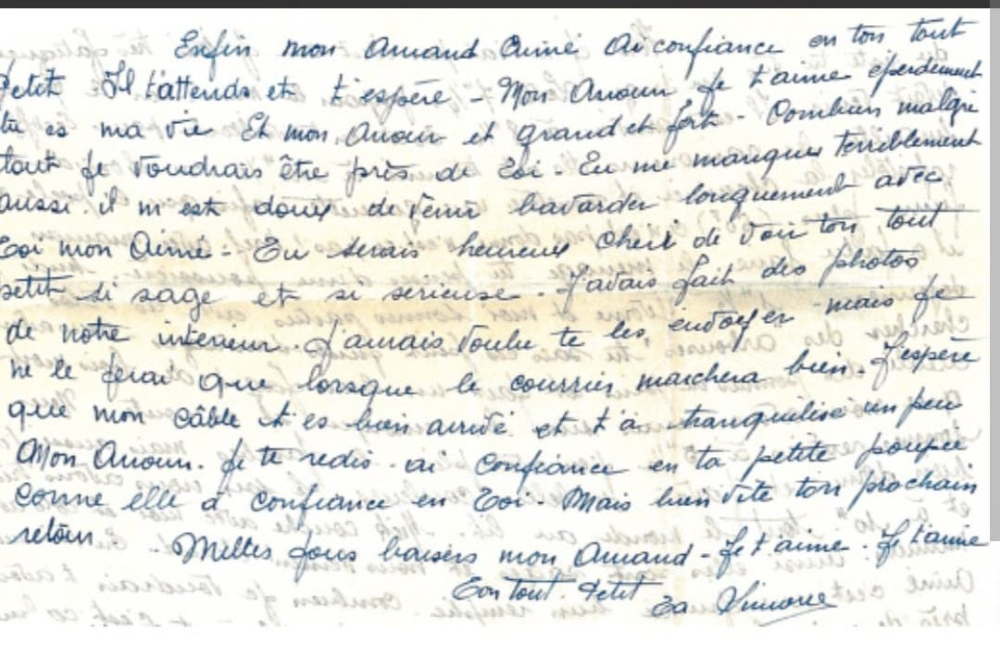
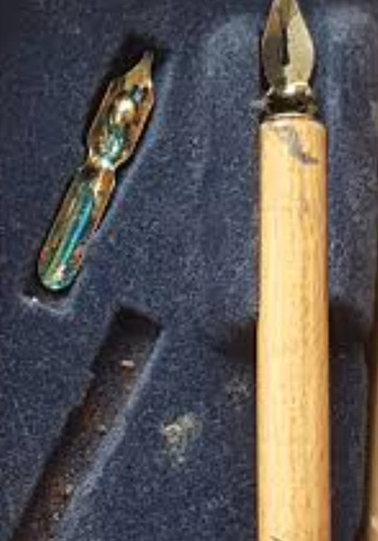
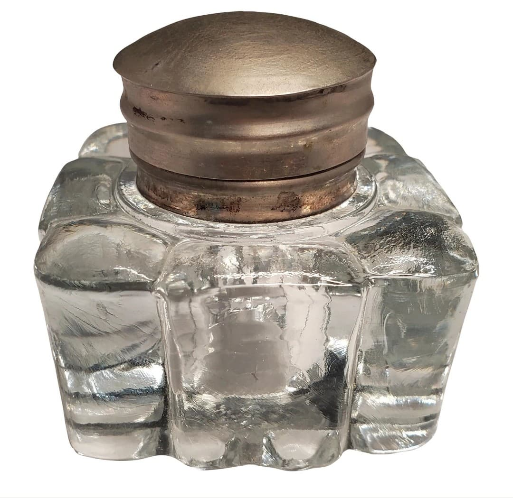

Introduction
Les objets divers regroupent les accessoires du quotidien du fantassin français durant la Seconde Guerre mondiale. La majorité de ces objets sont civils mais utilisés massivement en campagne.
Ils se trouvent principalement dans la musette ou les poches de l’uniforme, et accompagnent le soldat dans ses marches, ses bivouacs et ses moments de repos.
Savon

Objet civil utilisé pour la toilette quotidienne et le nettoyage des mains.
Rasoir mécanique

Permet au soldat de rester rasé selon les exigences de discipline de l’armée.
Peigne

Peigne en bakélite ou métal, utilisé pour l’hygiène personnelle.
Nécessaire de couture

Kit contenant fil, aiguilles et boutons pour réparer l’uniforme.
Couteau pliant

Petit couteau civil utilisé pour couper du pain, ouvrir des conserves ou bricoler.
Lampe de poche

Lampe civile en métal utilisée pour lire les cartes ou se déplacer de nuit.
Bougie en boîte

Très utilisée dans les abris pour éclairer les cartes ou écrire.
Briquet

Briquet civil utilisé pour allumer cigarettes, bougies ou feu de camp.
Pipe

Objet de confort très répandu pour se détendre durant les moments de repos.
Jeu de cartes

Permet de passer le temps dans les abris ou cantonnements.
Carnet militaire

Document personnel contenant les informations du soldat et ses notes de campagne.
Crayon gras

Utilisé pour écrire sur les cartes, documents ou carnets. Fonctionne même sous la pluie.
Ce que le soldat garde toujours sur lui
Objets indispensables portés dans les poches de l’uniforme, jamais laissés au cantonnement.
Papiers militaires

Livret militaire, identité et autorisations : indispensables pour prouver son appartenance à l’unité.
Carnet de notes

Le soldat y note positions, messages, ordres et informations de terrain.
Crayon gras
Permet d’écrire sur cartes, carnets, bois ou cuir. Résiste à l’humidité.
Petit couteau pliant
Utilisé pour couper du pain, ouvrir des conserves ou bricoler.
Objet religieux

Chapelet ou médaille, très répandu chez les soldats français comme objet de réconfort.
Briquet ou allumettes
Indispensable pour allumer cigarette, pipe, bougie ou feu de bivouac.
Tabac / Pipe
Objet de confort très courant pour se détendre et calmer le stress.
Objets Divers – Partie 2
Objets personnels courants mais non systématiques, présents dans la musette ou les effets du soldat.
Objets religieux
Objet de foi très répandu, conservé dans une poche ou la musette.

Médaille portée autour du cou ou dans une poche.

Image pieuse glissée dans le carnet ou le portefeuille.
Objets de correspondance

Enveloppes d’époque utilisées pour écrire à la famille.

Papier à lettre civil, souvent plié dans la musette.

Porte-plume classique des années 30–40.

Encrier portable en verre ou métal.
Nettoyage de l’arme

Contient l’huile pour l’entretien du fusil.

Burette d’huile pour lubrifier les pièces mobiles.

Chiffon civil utilisé pour nettoyer l’arme.

Petite brosse pour le canon et les pièces internes.
Objets de confort

Boîte de biscuits ou sucreries apportée de la maison.

Pastilles ou bonbons reçus dans les colis familiaux.

Miroir de poche utilisé pour la toilette.

Étui contenant le tabac du soldat.
Objets de bivouac

Boîte d’allumettes d’époque pour allumer feu ou bougies.

Petite gamelle civile parfois utilisée en complément.

Cordelette pour fixer du matériel ou improviser un abri.

Boîte métallique pour protéger des objets ou rations.